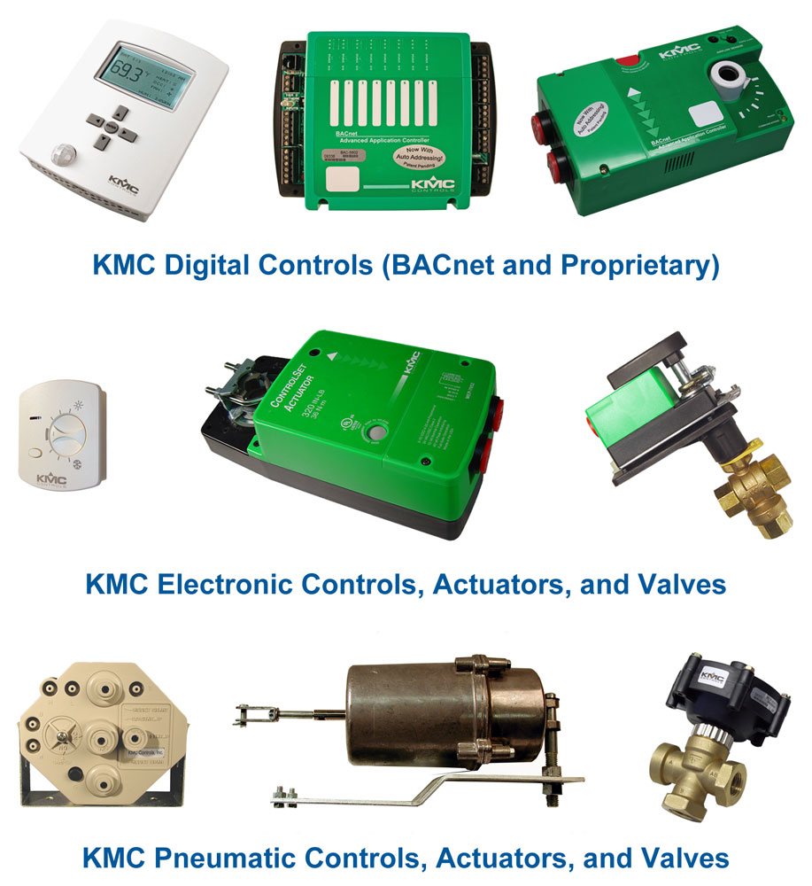

Build and commission a Niagara 4 station on a training system
Separate platform and station tasks, import a point, wire a training sequence and demonstrate trends, alarms, scheduling and relinquishment.
Recognise where your job takes place
Workbench is the engineering client. A station runs services, points and control logic. A JACE can host a station near field equipment. A Supervisor can run a separate station to aggregate data and present an operator view. Platform connection deals with host-level commissioning and station lifecycle, while a station connection deals with the running application. Compare the actual JACE photograph and callouts in Tridium’s product documentation with the generic controllers pictured here.
Use a licensed, isolated training station and an instructor-provided device or points simulator. Confirm Niagara build, module compatibility and permission before starting. If you only have a browser, run P111 · Commission one complete air-handler sequence and complete steps 2 through 5 on paper with the source references. Save the expected evidence and label it as a simulation.



Photo by Ben Franske, resized. Original photo · CC BY-SA 4.0.

Tridium demonstrates Niagara’s HTML5 engineering views in 4.14.
Work from a physical point to an operator view
- Record host, station name and revision. Locate the platform management view and then the station component tree. Start from the approved training copy. Capture a restorable baseline using the backup procedure for your version.
- In the training BACnet network, locate the assigned device and bring in a temperature AI and fan proof BI as proxy points. Record device instance, object type and instance, point quality, engineering units and value. Compare both to the simulator readings before adding local logic.
- On a wiresheet, use a schedule input, fan request logic and separate proof. Add a history for command, proof, value and quality. Choose an interval short enough to show the 30-second classroom test, or use change logging where suited. Make a simple graphic with source, units and status.
- Generate a simulator fan-proof failure and check the alarm appears after the training delay. Distinguish alarm acknowledgement from returning to a normal value. Trend one rise, one fall and a fault. Compare alarm and trend timestamps on the same clock.
- On a training writable output only, use the approved operator control and confirm expiry or manual release. Read effective state, record command and priority information, and verify normal scheduling resumes. Return the simulator to normal and save the final station backup in the designated training location.
Keep a point list, one wiresheet image from your own lab, two events and one trend export. P113 · Trace a Siemens Desigo point from PXC to Desigo CC repeats the same symptom on Siemens, where a controller project and the management project are distinct evidence.
Related lesson and source material
T56 · Building control sequences, command priorities and point quality.